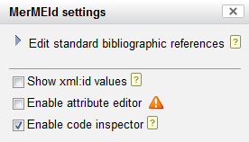
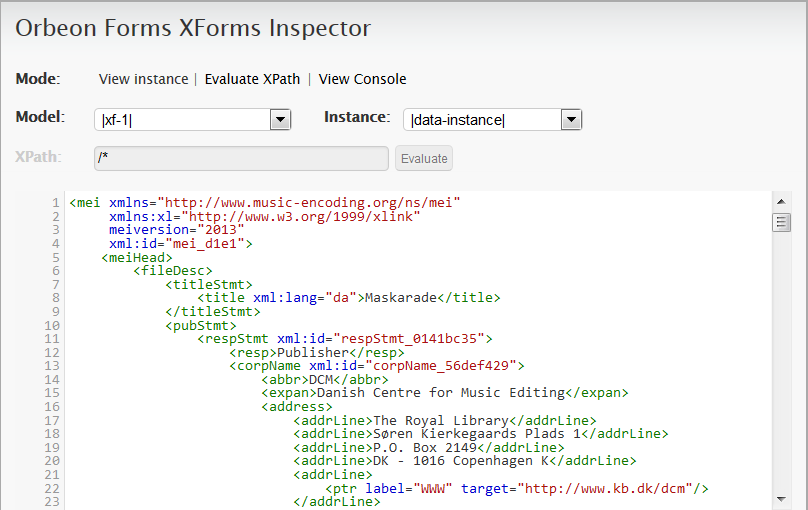

Using the code inspector
The code inspector (or Orbeon XForms Form Inspector) may be a useful tool for
experienced users for convenient inspection of the data you are editing. To review
your XML data without the code inspector, you will need to save your changes
first and open or update the standard XML file view, which is available by
clicking the XML view button  . The code inspector, however, allows you to
watch the changes in your XML data while you edit.
. The code inspector, however, allows you to
watch the changes in your XML data while you edit.
Because it may have a considerable effect on performance, the code inspector is disabled by default. In order to use it, your system administrator may need to modify the configuration file found at /editor/forms/mei/mermeid_configuration.xml. Locate the <code_inspector_main_switch/> element and set it to 'true':
<code_inspector_main_switch>true</code_inspector_main_switch>The code inspector is now available at the settings menu, which is opened by clicking the settings icon
 in the top
right corner. Check the "Enable code inspector" option to turn it on:
in the top
right corner. Check the "Enable code inspector" option to turn it on:
Close the settings menu. At the bottom of the page, you will find the live XML code view:
Please note that the code inspector is for viewing only; it does not allow editing your data in code view. For more advanced editing than offered by the MerMEId editor in standard mode, you may want to activate the attribute editor.
- Please note that MerMEId makes temporary changes to your data on loading, so what you see in the code inspector is not exactly what is saved when you hit the "Save" button. For instance, MerMEId strips off all contents of the <music/> element, adds some empty attributes, and translates MEI text formatting into HTML markup on loading – and vice versa on saving.